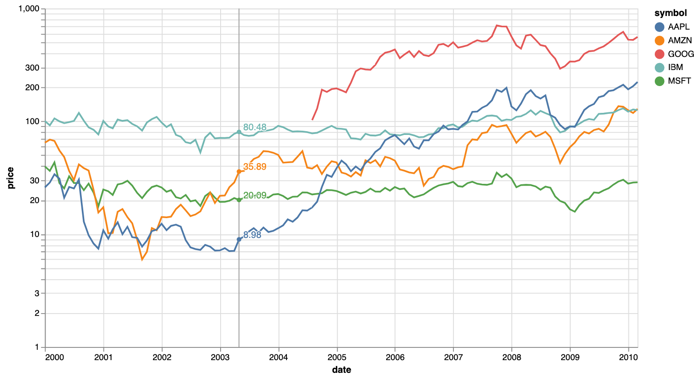

Portfolio Geek
Revue de Web
Apprendre et Progresser
Citations
A Propos
Français
English
Archive
Auteur
Vincent D.
10 good-to-know quotes about portfolio construction
Dans le monde de l’investissement, construire un portefeuille équilibré est un mélange d’art et de savoir-faire. Il faut comprendre les marchés financiers tout en adoptant…
Vincent D.
10 powerful quotes about data
In God we trust. All others must bring data.
–
W. Edwards Deming
Vincent D.
10 Quotes to Understand the Concept of Volatility
La volatilité est un terme qui évoque à la fois le risque et l’opportunité. Sur les marchés financiers, elle peut représenter la peur de la perte tout autant que le…
Vincent D.
10 Quotes to Grasp Fixed Income Investing
L’investissement en titres à revenu fixe est souvent considéré comme la pierre angulaire d’un portefeuille bien équilibré, offrant stabilité et rendements prévisibles face à…
Vincent D.
10 Quotes to Grasp Long Term Investing
L’investissement à long terme est une stratégie intemporelle qui a prouvé sa valeur au fil des générations. Elle demande de la patience, de la discipline et une…
Vincent D.
10 Quotes to Grasp the Markowitz’s legacy in Portfolio Construction
Dans le monde en perpétuelle évolution de la finance, rares sont ceux qui ont eu un impact aussi profond qu’Harry Markowitz. Son travail révolutionnaire sur la Théorie…
Vincent D.
10 Quotes to Grasp Momentum Investing
Momentum Investing
est une stratégie qui a fasciné et captivé les investisseurs pendant des décennies. C’est une approche dynamique qui se concentre sur l’idée que les…
Vincent D.
10 Quotes to Grasp Reproducible Research
Small-cap stocks are inherently riskier but provide potentially higher rewards compared to their large-cap counterparts.
–
Peter Lynch
Vincent D.
10 Quotes to Grasp Small Caps Investing
Bienvenue dans notre exploration de l’investissement dans les petites capitalisations. Dans le monde de la finance, les actions de petites capitalisations suscitent souvent…
Vincent D.
10 Quotes to Grasp Value Investing
Bienvenue dans notre exploration de la valeur d’investissement, une stratégie qui se concentre sur l’identification des actions sous-évaluées avec des fondamentaux solides.…
Vincent D.
Must Read Papers Series #1: Review of ‘Portfolio Selection’ (Harry Markowitz)
Imaginez-vous en train d’essayer de naviguer dans un vaste océan sans carte. Dans le monde de la finance, l’article de Markowitz est une des rares cartes disponibles et…
22 août 2024
Vincent D.
Tracking Error of QQQ vs SPY: A Practical Guide with Python
In the world of finance and investing, understanding how closely an investment tracks its benchmark index is crucial for evaluating performance and risk. This concept is…
18 août 2024
Vincent D.
Correlation of returns: why it matters, and how to analyse it with Python
Understanding the correlation of returns between different asset classes is a key concept in finance and investment. For instance, analysing the correlation between QQQ…
13 août 2024
Vincent D.
Maximum Drawdown: A Practical Approach with Python
Maximum Drawdown (MDD) is a critical risk metric for investors. It quantifies the largest peak-to-trough decline in an investment’s value over a specified period, providing…
4 août 2024
Vincent D.
Sharpe Ratio: A Must-Know for Every Investor
As a financial engineer with over 20 years of experience, I understand just how crucial the Sharpe Ratio is for evaluating investments. This essential metric provides a way…
4 août 2024
Vincent D.
Understanding Historical Volatility
If you’re a budding financial engineer, investor, or market enthusiast, understanding historical volatility is crucial. Historical volatility, by referencing past price…
3 août 2024
Vincent D.
Portfolio Optimisation with Python
Thanks for popping by; please note that this article is still in construction.
1 mai 2024
Vincent D.
Setting up a Python Development Workstation (Windows)
In this article we set up our Windows workstation and install all the relevant tools to be efficient in coding in Python.
22 févr. 2024
Vincent D.
Setting up a Python Development Workstation (MacOs)
In this article, we start our journey into Finance and Python coding. Let’s set up our MacOs Workstation and install a few key tools to code efficiently.
20 févr. 2024
Vincent D.
Getting and charting data with Matplotlib
In this article, we start our data analysis journey with Python by getting and charting data, in this case the performance of an ETF using freely available data.
25 janv. 2024
Vincent D.

Visualising Historical Data
“A quick introduction on how to gather data using Python, Pandas and Pandas_DataReader in order to easily gather historical times from Yahoo Finance.”
3 mars 2023
Vincent D.
Aucun article correspondant